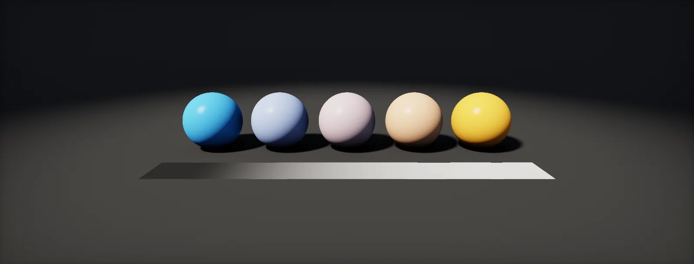

Reading a Shader
Shader code and node graphs look dense until you know the handful of parts every shader is built from. This unit takes them one at a time.

Numbers and groups of numbers
A shader works almost only with numbers. The basic type is float, a number with a decimal point such as 0.5 or 1200.0. Because positions, directions and colours each need several numbers, shader languages also have small groups of floats built in:
| Type | Holds | Typical use | Shader Graph port |
|---|---|---|---|
| float | 1 number | a brightness, a time, a distance | Float (Vector 1) |
| float2 | 2 numbers | a texture coordinate (u, v) | Vector 2 |
| float3 | 3 numbers | a position or direction (x, y, z), a colour (r, g, b) | Vector 3 |
| float4 | 4 numbers | a colour with alpha (r, g, b, a) | Vector 4 |
| half, half3… | the same with less precision | colours and normals on mobile, where it is faster | set by the graph's precision |
| float4x4 | a 4 × 4 grid of numbers | a transform matrix | Matrix 4x4 |
A float3 is a vector. Its parts are called x y z, and for colours you may also write r g b; they mean the same slots. You can pick, reorder and repeat parts by writing their letters after a dot. This is called a :
Maths on these types works part by part. Multiplying two colours multiplies red with red, green with green and blue with blue. That is exactly how a surface colour filters the light that hits it:
Two programs: vertex and pixel
A shader file usually holds two programs that run one after the other, as described in From triangles to pixels:
- The vertex shader runs once per corner of the mesh. Its input is the data stored per vertex in the mesh's vertex buffer: position, normal, UV, maybe a colour. Its one required output is where that corner lands on screen (the clip-space position). It may also pass on any other values.
- The pixel shader runs once per covered pixel. Its input is whatever the vertex shader passed on, blended between the three corners (next chapter). Its output is the pixel's colour.
Here is a complete minimal shader in HLSL, the language Unity and Unreal use. Read the comments from top to bottom; every line maps to one of the steps above.
struct Attributes // what each vertex brings from the mesh { float3 positionOS : POSITION; // position in object space float2 uv : TEXCOORD0; // texture coordinate }; struct Varyings // what the vertex shader hands to the pixel shader { float4 positionCS : SV_POSITION; // required: where the corner lands on screen float2 uv : TEXCOORD0; // passed through, will be interpolated }; Varyings Vert(Attributes IN) // runs once per vertex { Varyings OUT; OUT.positionCS = TransformObjectToHClip(IN.positionOS); // object → clip space OUT.uv = IN.uv; return OUT; } float4 Frag(Varyings IN) : SV_Target // runs once per pixel { return float4(IN.uv, 0, 1); // colour = the interpolated uv }
The words after the colons (POSITION, SV_POSITION, SV_Target) are : labels that tell the GPU what a value means. SV_Target means "this is the colour to write into the render target".
In Shader Graph the two programs are the Vertex and Fragment blocks of the Master Stack. Most graphs only use Fragment. HDRP hand-written shaders are long because they include lighting; start from a Shader Graph or an Unlit example rather than from scratch.
URP's Unlit shader template (Create → Shader → Unlit Shader, then convert to the URP includes) is close to the code above: TransformObjectToHClip comes from Core.hlsl. Shader Graph shows Vertex and Fragment blocks.
Unreal materials hide the two programs. Pins like World Position Offset run per vertex; Base Color, Roughness and the others run per pixel. Customized UVs lets you compute a value per vertex and have it interpolated, which is the same idea as the Varyings struct.
How values travel from corners to pixels
The vertex shader only runs at the three corners, yet the pixel shader receives a value for every pixel in between. The GPU blends the three corner values for each pixel, giving more weight to the corners that are closer. The weights are called : three numbers that are each between 0 and 1 and always add up to 1.
Each weight is the area of the small triangle opposite its corner, divided by the whole triangle's area. Those areas come from the same edge function the rasterizer already computes. Drag the point and watch the weights and the blended colour:
This is why a vertex colour, a UV or a normal varies smoothly across a triangle: every pixel gets its own blend. It is also why a value that changes fast within one triangle, like a sharp highlight, looks wrong when it is computed per vertex: the pixel shader only sees a smooth blend of three samples.
In 3D the GPU corrects the weights for perspective, so a texture on a floor does not bend. The idea stays the same: a weighted average of three corner values.
Values the same for every pixel: properties
Some inputs differ per vertex or per pixel. Others are the same for the whole draw: a tint colour, a roughness value, a texture, the time. These are (graphics programmers say uniforms). You set them in the material inspector or from a script, and every pixel of that draw reads the same value.
On the GPU they live in a small block of memory called a constant buffer. In HLSL it looks like this:
CBUFFER_START(UnityPerMaterial) // one block of values per material float4 _BaseColor; float _Smoothness; CBUFFER_END float4 Frag(Varyings IN) : SV_Target { return _BaseColor; // the same value for every pixel of this draw }
Declare properties in the shader's Properties block (or on the Shader Graph Blackboard) and put them in CBUFFER_START(UnityPerMaterial) so the SRP Batcher can keep them on the GPU. From C#: material.SetFloat("_Smoothness", 0.5f), or a MaterialPropertyBlock to vary them per renderer without new materials.
Same as HDRP. Properties outside UnityPerMaterial still work but make the shader incompatible with the SRP Batcher, which costs CPU time per draw (draw calls and state).
Turn a constant into a Parameter (right-click → Convert to Parameter). Material Instances then override its value without recompiling. At runtime: a Dynamic Material Instance and SetScalarParameterValue / SetVectorParameterValue, or Material Parameter Collections for values many materials share, such as wind.
The built-in functions, as graphs
Shaders are built from a small set of functions that shape numbers. Each one below is shown as a graph: the horizontal axis is the input, the vertical axis the output, and the strip under the graph shows what the function does to a gradient across a surface. Learn these by moving the sliders; they appear in nearly every shader you will read.
saturate: keep a value between 0 and 1
lerp: blend between two values
lerp (linear interpolation) returns a when t is 0, b when t is 1, and the straight line between. It is the same weighted average as the interpolation chapter, with two inputs instead of three.
inverse lerp: where is x between a and b?
The opposite question: given a value x, how far along from a to b is it? This turns any range into 0–1, for example a height in metres into a blend mask.
step and smoothstep: hard and soft thresholds
frac: repeat
frac keeps only the part after the decimal point, so it counts 0 to 1 again and again. Multiply the input first to get more repeats. Tiling textures and stripes come from this.
pow: bend a gradient
The same functions as nodes
Node editors use the same functions under similar names, so everything above applies directly to graphs. A node is one function call; a wire is a variable.
| HLSL | Unity Shader Graph | Unreal material editor |
|---|---|---|
| saturate(x) | Saturate | Saturate |
| clamp(x, a, b) | Clamp | Clamp |
| lerp(a, b, t) | Lerp | LinearInterpolate (Lerp) |
| (x − a) / (b − a) | Inverse Lerp | InverseLinearInterpolate (UE 5) |
| step(e, x) | Step | If, or a Custom node |
| smoothstep(a, b, x) | Smoothstep | SmoothStep |
| frac(x) | Fraction | Frac |
| pow(x, p) | Power | Power |
| dot(a, b) | Dot Product | DotProduct |
| normalize(v) | Normalize | Normalize |
Note the argument order of step: in HLSL the edge comes first, step(edge, x), which returns 1 when x is at least edge. Shader Graph's Step node follows HLSL. The vector functions at the bottom of the table are explained in Vectors and Dot and Cross Product.
Build it in Unity HDRP
In HDRP you rarely write a whole shader by hand: Shader Graph generates the passes the pipeline needs, and your own code goes into Custom Function nodes. This exercise builds a small function file, exposes properties and drives them from C#. Written for Unity 6 with HDRP 17; Unity 2022 LTS works the same apart from a few renamed menu entries.
- Create the graph: in the Project window, Create > Shader Graph > HDRP > Lit Shader Graph. Open it and check the Graph Inspector > Graph Settings.
- In the Blackboard, add a Float property
Pulse Speed. In the Graph Inspector its Reference is something like_Pulse_Speed: rename it to_PulseSpeed. The reference is the name C# uses. - Save
Remap.hlslunderAssets. In the graph, add a Custom Function node. Set Type toFile, Source toRemap.hlsland Name toPulse(without the_floatsuffix). Add the inputs Time (Float), Speed (Float), Sharpness (Float) and the outputs Out (Float), in that order and with those types: they must match the function's parameters. - Connect the Time node, the
_PulseSpeedproperty and a Float for sharpness. Multiply a Color property by Out and connect it to Emission. - To see what Shader Graph generated, right-click the master stack or select the graph asset and use View Generated Shader: your function appears inside the forward pass, called with the node's inputs.
- Add
PulseDriver.csto the object. It sets_PulseSpeedfor this object only through a MaterialPropertyBlock, and a global value_AtlasIntensitythat every shader can read. - To read the global value in the graph, add a Float property with Reference
_AtlasIntensityand untick Exposed (in newer versions: set Scope to Global). Unexposed properties are not stored in the material, so the global value reaches them.
#ifndef ATLAS_REMAP_INCLUDED
#define ATLAS_REMAP_INCLUDED
// The building blocks from this unit, as reusable functions.
float InverseLerp(float a, float b, float x) { return saturate((x - a) / (b - a)); }
float Remap(float x, float inMin, float inMax, float outMin, float outMax)
{
return lerp(outMin, outMax, InverseLerp(inMin, inMax, x));
}
// A smooth 0..1 pulse: frac makes a sawtooth, sin a wave, pow sharpens the peak.
void Pulse_float(float Time, float Speed, float Sharpness, out float Out)
{
float wave = 0.5 + 0.5 * sin(Time * Speed * 6.2831853);
Out = pow(saturate(wave), max(Sharpness, 0.01));
}
// Shader Graph can call the same function at half precision when asked to.
void Pulse_half(half Time, half Speed, half Sharpness, out half Out)
{
half wave = 0.5 + 0.5 * sin(Time * Speed * 6.2831853);
Out = pow(saturate(wave), max(Sharpness, 0.01));
}
#endifusing UnityEngine;
// Sets a material property on this object only, and one global property for all shaders.
[ExecuteAlways]
public class PulseDriver : MonoBehaviour
{
public float speed = 1f;
[Range(0, 4)] public float globalIntensity = 1f;
static readonly int SpeedId = Shader.PropertyToID("_PulseSpeed");
static readonly int IntensityId = Shader.PropertyToID("_AtlasIntensity");
MaterialPropertyBlock block;
void Update()
{
var r = GetComponent<Renderer>();
if (r == null) return;
block ??= new MaterialPropertyBlock();
r.GetPropertyBlock(block);
block.SetFloat(SpeedId, speed); // per object; leaves the shared material untouched
r.SetPropertyBlock(block);
Shader.SetGlobalFloat(IntensityId, globalIntensity); // every shader with an unexposed _AtlasIntensity
}
}A MaterialPropertyBlock keeps one material for many objects, but objects using one are drawn outside the SRP Batcher. For a few objects that does not matter; for thousands, give each its own material variant or store per-object values in a buffer (Buffers). Amplify Shader Editor: paste the function body into a Custom Expression node (mode Call with the file included, or Create with the code inline); inputs and outputs map the same way.
Identical: Shader Graph > URP > Lit Shader Graph, the same Custom Function node and C#.
Material Parameters (Scalar, Vector) are set from Blueprint or C++ with a Dynamic Material Instance (SetScalarParameterValue); global values live in a Material Parameter Collection. HLSL goes into a Custom node, or a .ush file included through the node's Include File Paths.
Sources and further reading
The formulas and engine details in this unit come from these references. Engine documentation changes between versions.
- DocsHLSL intrinsic functionsMicrosoftThe reference for lerp, saturate, smoothstep, frac and every other built-in function.
- TutorialThe Book of Shaders: Shaping functionsPatricio Gonzalez Vivo, Jen Lowestep, smoothstep, pow and friends drawn as graphs.
- DocsShader Graph manualUnityThe node equivalents of the functions in this unit.